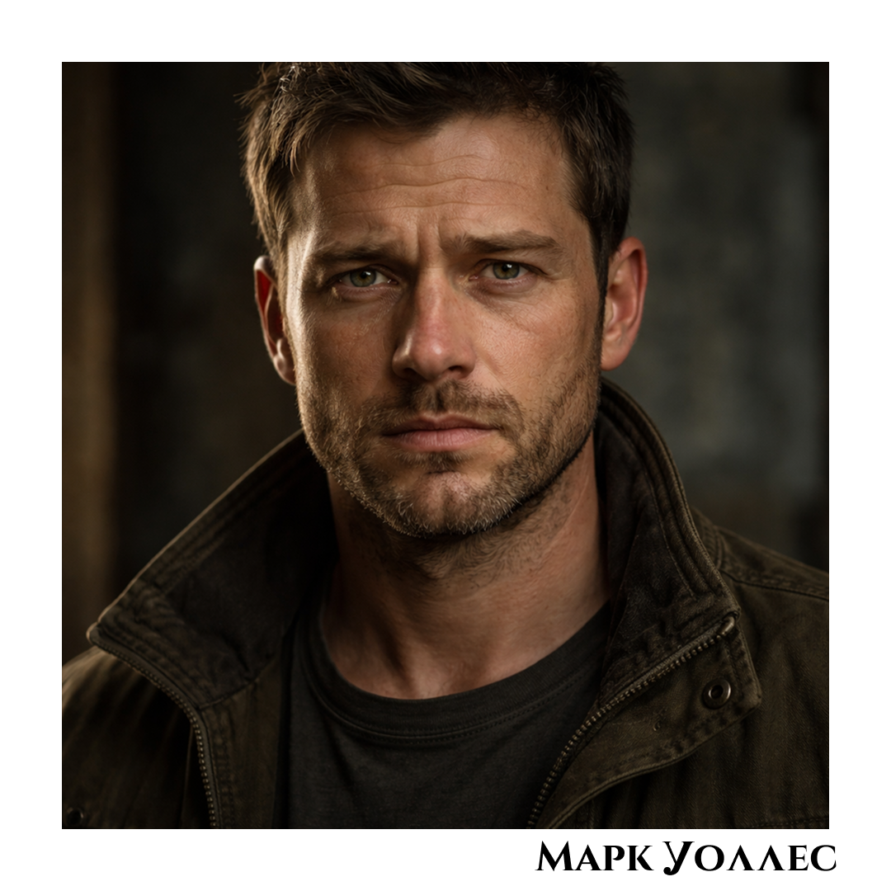
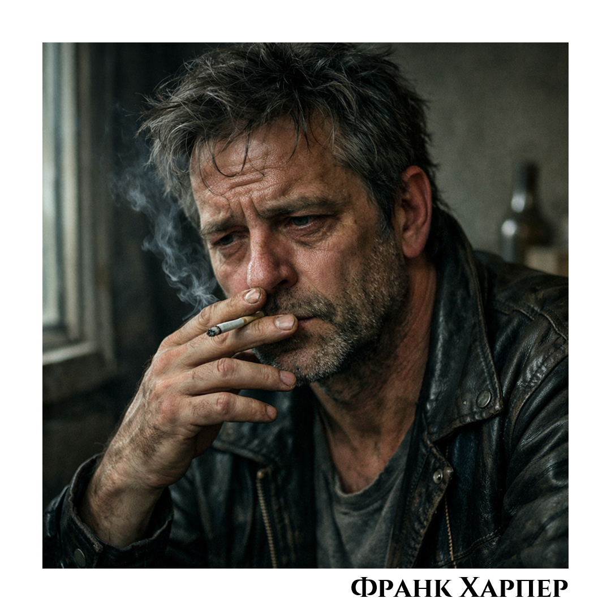
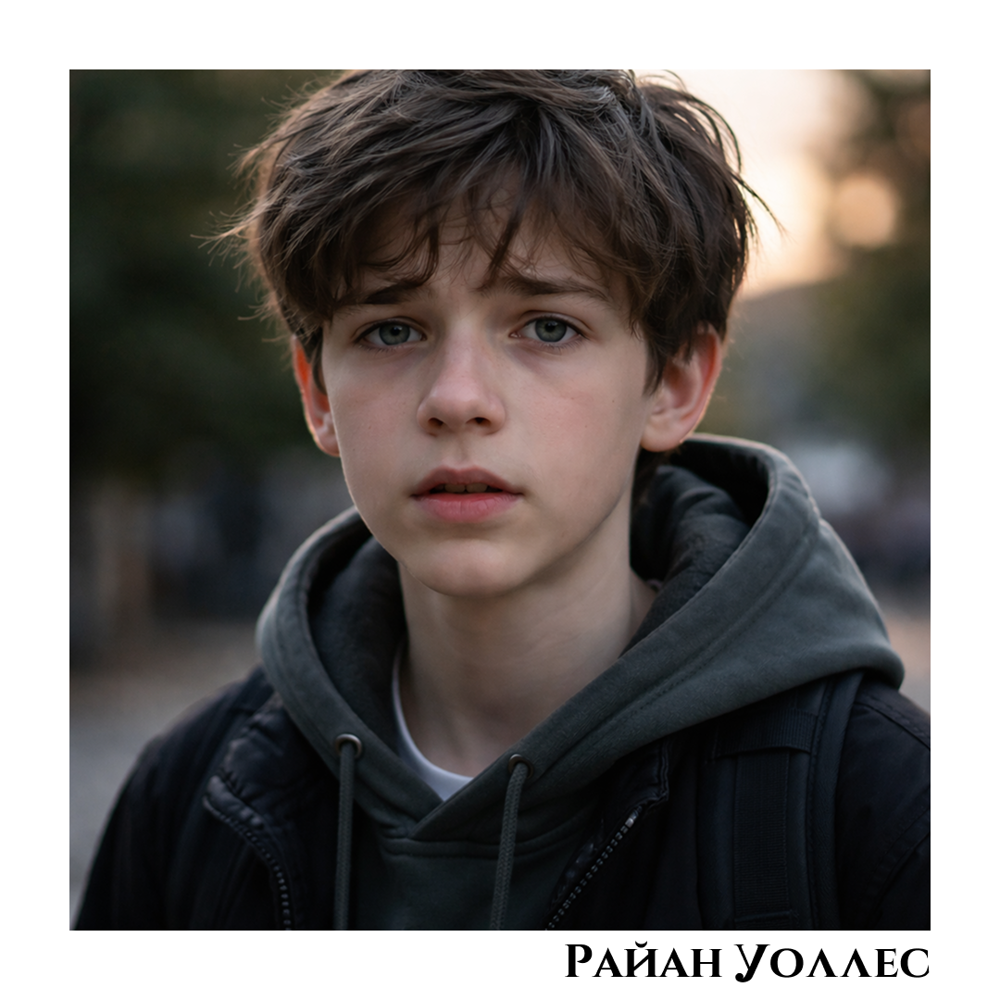
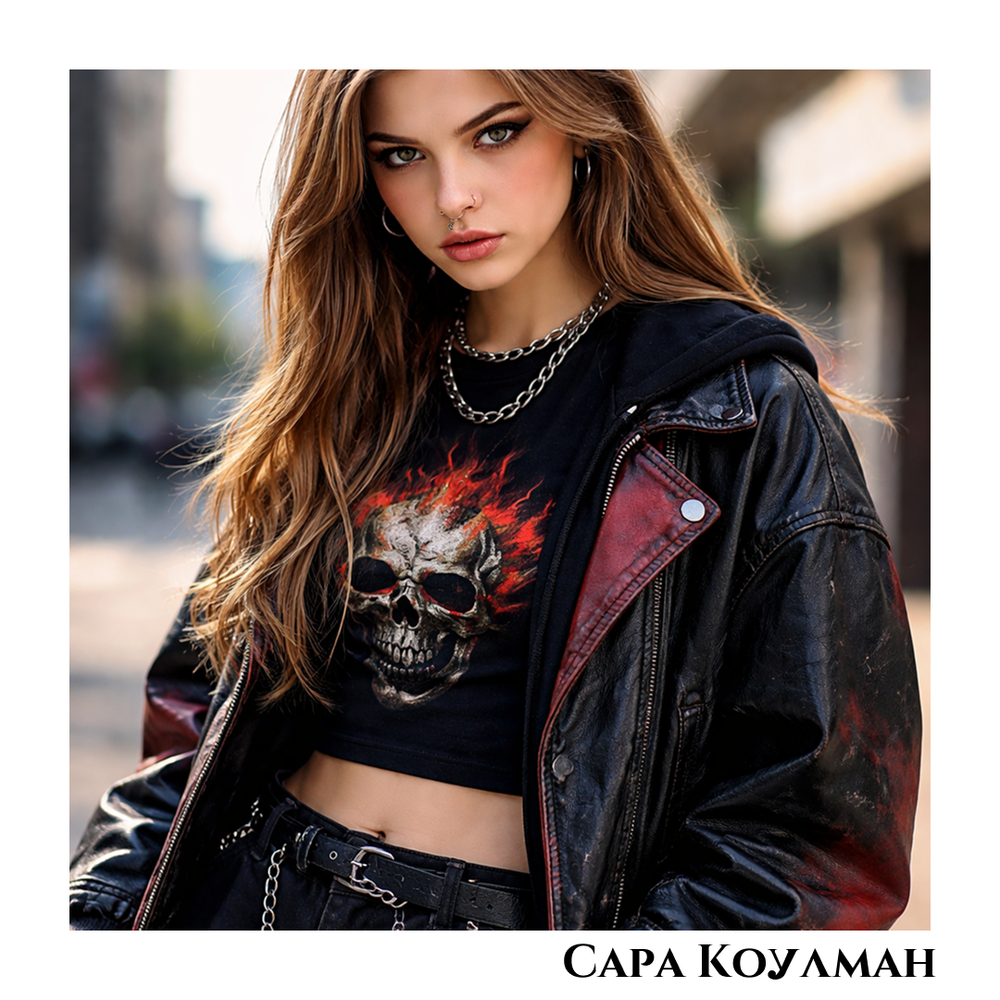
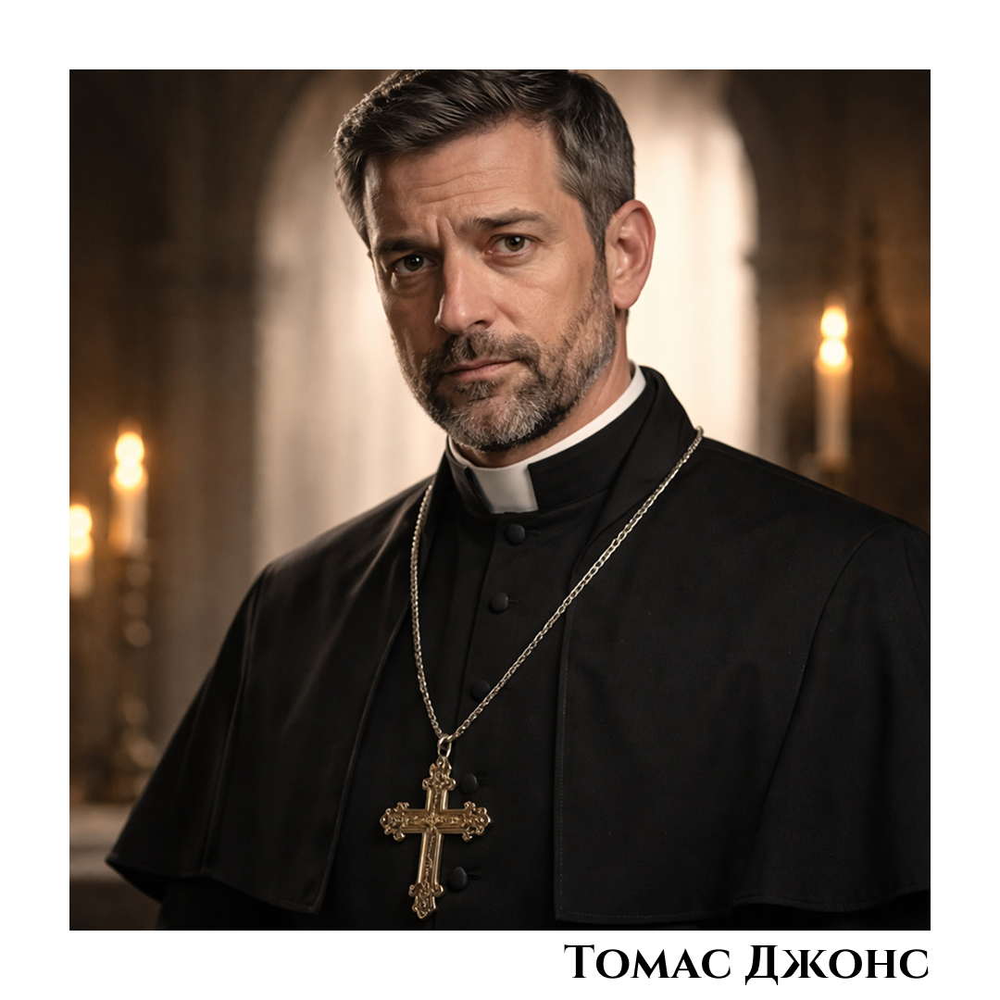
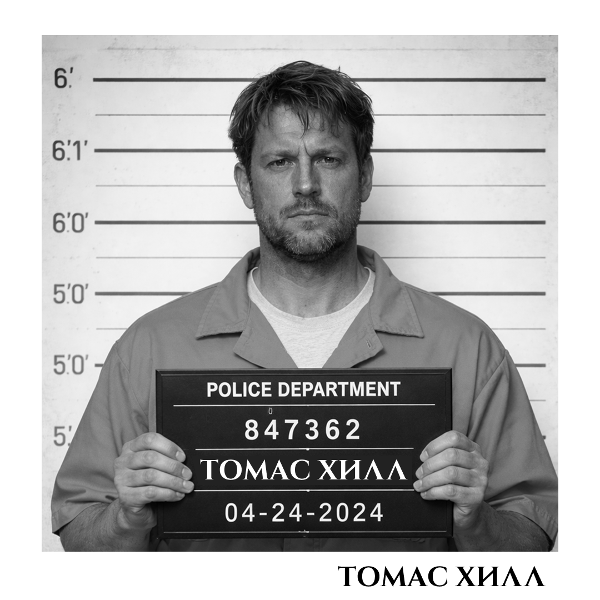
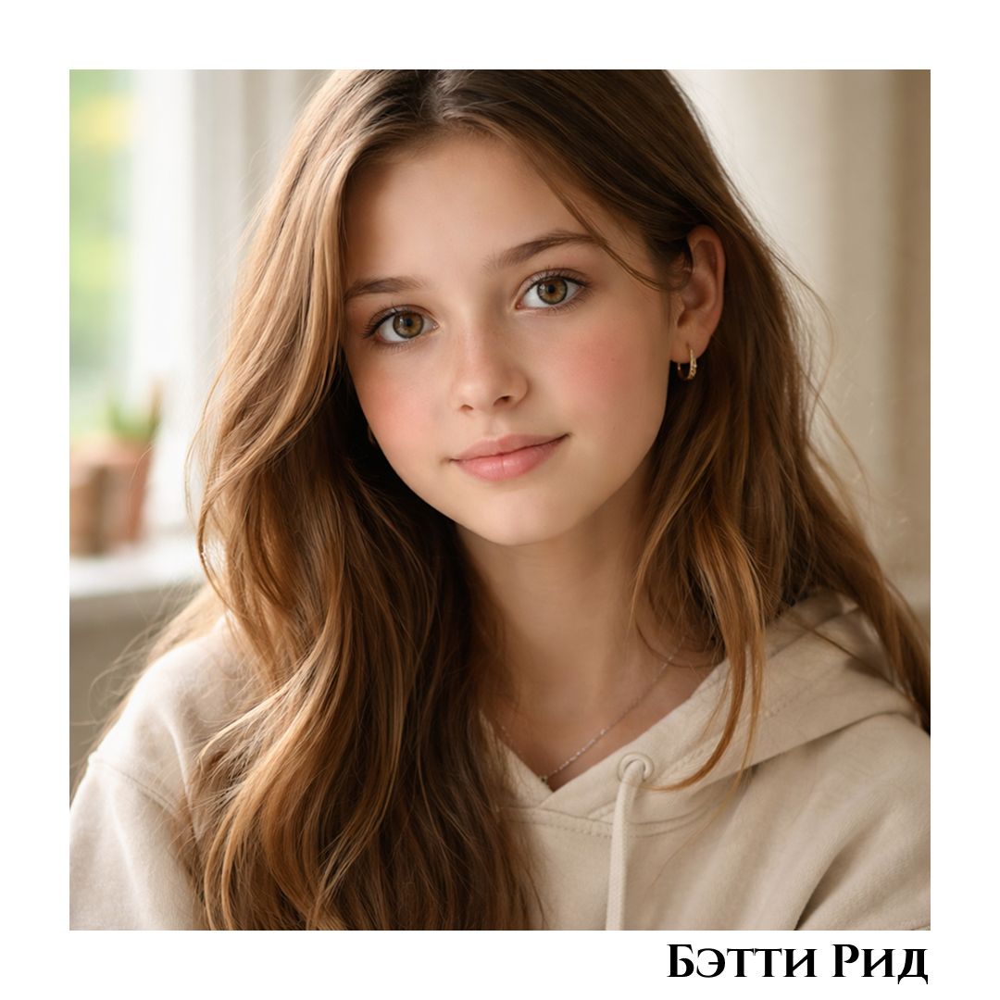

База лиц по делу Лины Харпер
Список содержит подозреваемых, свидетелей и связанных лиц. Уровень подозрения меняется по мере открытия новых материалов.

ЖЕРТВА
Лина Харпер
17 лет. Найдена мёртвой у реки. Тело было перемещено после убийства.
Статус по делу

ПОДОЗРЕВАЕМЫЙ
Марк Уоллес
38 лет. Бывший полицейский. Связан с Линой и имеет доступ к старому оружию.
Уровень подозрения: 85%

СВЯЗАННОЕ ЛИЦО
Франк Харпер
Отец Лины. Находится в тяжёлом эмоциональном состоянии после смерти дочери.
Уровень подозрения: 20%

НЕСОВЕРШЕННОЛЕТНИЙ
Райан Уоллес
13 лет. Сын Марка Уоллеса. Замечен рядом с сараем в день убийства.
Уровень подозрения: 45%

ПОДОЗРЕВАЕМАЯ
Сара Коулман
17 лет. Новая девушка Кайла. Участвовала в конфликте с Линой до её смерти.
Уровень подозрения: 70%

ПОДОЗРЕВАЕМЫЙ
Томас Джонс
45 лет. Священник. Последним подвозил Лину вечером перед смертью.
Уровень подозрения: 65%

ЗАДЕРЖАН
Томас Хилл
Фигурант дела о похищениях. Связан с синем фургоном, но не подтверждён как убийца Лины.
Уровень подозрения: 50%

СВИДЕТЕЛЬ
Бетти Рид
15 лет. Дочь Авы Рид. Видела конфликт Лины, Сары и Кайла.
Уровень подозрения: 10%
ПОДОЗРЕВАЕМЫЙ
Кайл Беннет
18 лет. Бывший парень Лины. Был рядом с ней в день убийства. Позже найден раненым.
Уровень подозрения: 75%